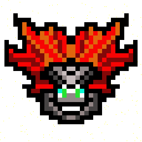
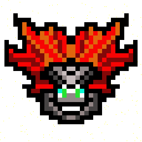

The Legend of 7anguine
"The cosmos is all that is, or ever was, or ever will be - mine"
– Dr Carl Sagan
- 7anguine
Nobody in recorded history has ever known exactly who or what 7anguine is; in fact 7anguine doesn’t even exist at all according to the recorded history of the present reality. But, if you only take away one thing from your time spent here today, let it be this: 7anguine’s existence is irrefutably true.
Prophecies vary by culture, but they universally depict an ancient ethereal being that exists in the depths of space. The variations to this base agreement arrive with the conflicting prophecies other is whether 7anguine ; some cultures claim he took on the form of but through unknown means ascended to something beyond human interpretation.
7anguine laughs at humanity’s obsession with insignificant matters, but offers guidance to those couragous enough to explore the depths of reality. Practice in 7anguine’s rituals, and maybe you too will gain the fruits beyond man’s comprehension...
You’re wondering why 7anguine doesn’t show itself when you seek it on your human internet, or why you’re learning all of this on a 90’s styled html website. You do not even know the questions you need answered yet – all will come in time.
I am Spooky, the Au courant, prophet of 7anguine. This website is dedicated to sharing what I’ve come to understand about this being.
7anguine's sigil is also a conduit to the portal, with the four prophetic emblems making up the cypher:
y.at/👻🐧🚀🤑
👻
the emblem of Spooky, the Au courant
🐧
The emblem of Spheni, the Shroud
🚀
The emblem of Xanar, the Auspice
🤑
the emblem of Odic, the Halcyon.
March 2023
Welcome. 7anguine's data is being translated, follow development on our socials